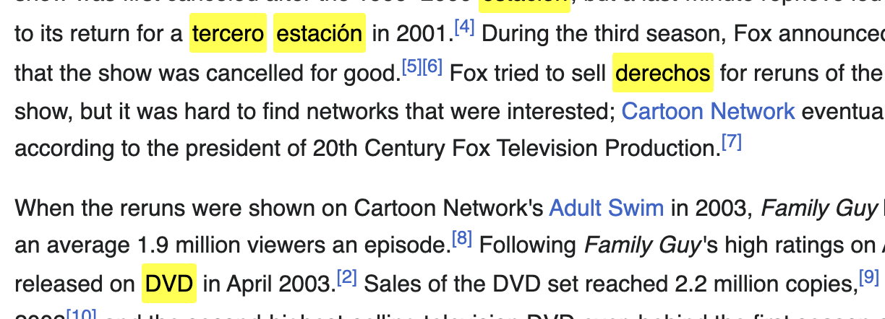

Janus Chrome extension in action: seamlessly translating English words into Spanish on a live news website. Effortless language immersion and vocabulary building for language learners, right in your browser.

Personalized vocabulary highlights: Janus intelligently selects relevant words based on your learning level, making language acquisition natural and contextual while you browse your favorite websites.
Janus learns from your interests: it will highlight words that are relevant to topics that are near and dear to you.